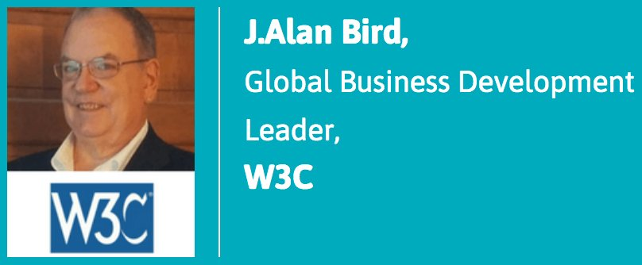
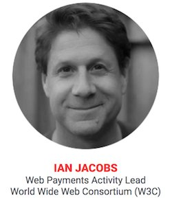
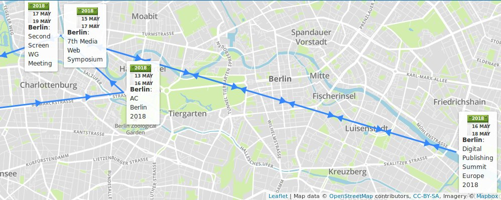
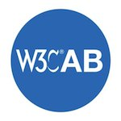
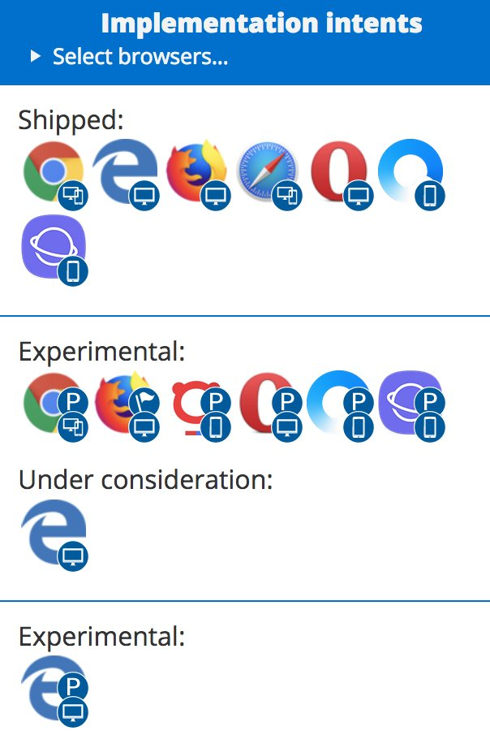
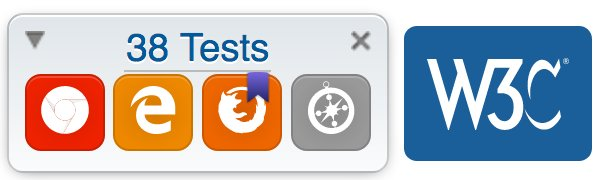
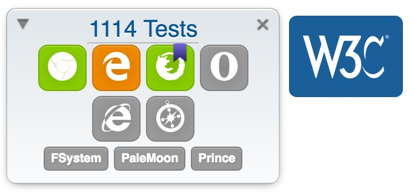

May@w3c: meetings, talks, workshop, events, etc. https://www.w3.org/participate/eventscal.html

3-4: @w3c is present at @seamlessasia 2018 #Singapore (w/ keynote panel session, booth, talk, etc.) http://www.terrapinn.com/exhibition/seamless/ cc @JAlanBird
https://twitter.com/w3cdevs/status/9913544999849164807-10: Future of the #Web events series in #Melbourne #Canberra and #Sydney organized by @ourANU @W3CAustralia http://www.anu.edu.au/events/w3c-anu-future-of-the-web-data-drives-the-smart-city

https://twitter.com/w3cdevs/status/9913545064610160658-11: The #Payments Canada Summit https://www.thesummit.ca/ in #Toronto cc @ibjacobs
https://twitter.com/w3cdevs/status/99135450968646041710-11: #W3CWorkshop on #Web5G: Aligning evolutions of network and #Web technologies https://www.w3.org/2017/11/web5g-workshop/, hosted by @GSMA #London

https://twitter.com/w3cdevs/status/991354513817833472... and #Berlin üá©üá™ hosts a plethora of @w3c meetings and events this month:
https://twitter.com/w3cdevs/status/99135452000852377830-31: @w3cpublishing's #WorkingGroup #f2fmeeting hosted by @Rakuten_Kobo in #Toronto
https://twitter.com/w3cdevs/status/99135451747939532815-16: #FOKUSMWS 7th Media Web Symposium https://www.fokus.fraunhofer.de/go/mws organized by @fraunhoferfokus https://twitter.com/stepsteg/status/988785623912894464
https://twitter.com/w3cdevs/status/99135452514240512213-15: @w3c's member meeting, hosted by @ercim_news with the support of @w3c_de and sponsored by @Siemens
https://twitter.com/w3cdevs/status/99135452256710246416-17: @w3cpublishing's Digital Publishing Europe 2018 event https://www.edrlab.org/dpub-summit-2018/ organized by @EDRLab_EPUB

https://twitter.com/w3cdevs/status/99135452771769958417-18: Open Screen Protocol discussions https://github.com/webscreens/openscreenprotocol at the Second Screen #WorkingGroup #f2fmeeting hosted by @fraunhoferfokus https://www.w3.org/wiki/Second_Screen/Meetings/May_2018_F2F

https://twitter.com/w3cdevs/status/991354530527883264Today opens the voting period for five W3C Advisory Board seats. The @w3c membership elects the @ab members. The deadline for votes is 30 May 2018 and the results will be announced during the first week of June.
https://twitter.com/w3cdevs/status/991733779755618306Seven people have been nominated: @t (@Mozilla), Jay (Junichi) Kishigami (@NTTPR), @frivoal (#W3CInvitedExpert), @TzviyaSiegman (@WileyGlobal), @daithesong (@Apple), @tink (@paciellogroup), @cwilso (@Google). Check out their nomination statements: https://www.w3.org/2018/05/02-ab-nominations
https://twitter.com/w3cdevs/status/991733860747698177Created in 1998 (four years after #w3c got started), @ab provides ongoing guidance to the @W3C team on issues of strategy, management, legal matters, process, and conflict resolution. It serves its members by tracking and handling issues raised in member meetings.
https://twitter.com/w3cdevs/status/991733865566830594So now, you may find yourself wondering what the @ab is. https://www.w3.org/2002/ab/
https://twitter.com/w3cdevs/status/991733862685437953The latest edition of the Process Document was released on 1 February.
https://twitter.com/w3cdevs/status/959076749291196416
Contributions to the editor’s draft are always welcome! Post them in this repo: https://github.com/w3c/w3process
https://twitter.com/w3cdevs/status/991733869819977728The Advisory Board also manages the Process Document's evolution where the organizational structure of W3C, its activities, responsibilities and functions are described: https://www.w3.org/2018/Process-20180201/
https://twitter.com/w3cdevs/status/991733868461023232It is currently composed of @W3C members: @chaals @t @cwilso Judy Zhu @LeonieWatson @daithesong @mc2hampion Jay Kishigami @thisNatasha, and chaired by @w3c's CEO @jeff_jaffe, and staffed by @wseltzer
https://twitter.com/w3cdevs/status/991733866997125121The @ab's 2018 priorities are #Globalization, #Diversity, Living #standards, @WHATWG relationship, Funding, etc. Check them out! https://www.w3.org/wiki/AB/2018_Priorities
https://twitter.com/w3cdevs/status/991733871560585221#Awesome new feature!! the #MobileWebApps roadmap now displays #implementation status in mobile browsers! Is the feature supported in #Chrome for #Android? Safari for #IOS? #SamsungInternet? Does it need a prefix? Is it behind a flag? See an example of shipped vs experimental:
New edition of the #MobileWebApps roadmap has been published! Check out how @w3c #Web technologies increase the capabilities of mobile Web applications: https://www.w3.org/2018/04/web-roadmaps/mobile/ #April2018 @W3CChina https://twitter.com/w3c/status/992319461502865408
https://twitter.com/w3cdevs/status/993484925256060928Did you know that you can listen to touch and wheel events without affecting scrolling performance ? Check out the description of the "passive" event listener option: https://www.w3.org/2018/04/web-roadmaps/mobile/performance.html #WebPerf

https://twitter.com/w3cdevs/status/993484929181896704#MediaQueries let #WebDevs adjust the layout of a component relative to the viewport size. Feels too restrictive for fully #ResponsiveLayout? Element Queries proposes a mechanism to adjust the layout relative to the size of a containing element instead: https://www.w3.org/2018/04/web-roadmaps/mobile/adaptation.html

https://twitter.com/w3cdevs/status/993484927344762880Some of the new success criteria in #WCAG21 have a specific resonance in mobile contexts. Learn about Pointer Gestures, Target Size and Orientation in the W3C Mobile roadmap: https://www.w3.org/2018/04/web-roadmaps/mobile/userinput.html#well-deployed-technologies @wai #a11y

https://twitter.com/w3cdevs/status/99348493111544217628: a [Chapters Web Standards] meetup on #CSSDB - Keeping up with #CSS by @jon_neal https://www.meetup.com/login/?returnUri=https%3A%2F%2Fwww.meetup.com%2Fpittsburgh-code-supply%2Fevents%2F250453055%2F cc @briankardell #Pittsburgh
https://twitter.com/w3cdevs/status/994606045837299713For compatibility with existing mouse based content, this specification describes a mapping to fire #MouseEvents for other pointer device types.
An update of the Pointer events #WebStandard, Pointer Events Level 2 addresses the need of diverse forms of pointing input devices (stylus/touchscreen/pen/etc.), in addition to the mouse. https://www.w3.org/TR/2018/CR-pointerevents2-20180510/ #timetoimplement https://twitter.com/w3c/status/994794789513170956
https://twitter.com/w3cdevs/status/994828163002896385The group provides tests that can be run manually from http://w3c-test.org/pointerevents/ in an effort to enable wider #browser adoption, and invites feedback and implementations at https://github.com/w3c/pointerevents/
https://twitter.com/w3cdevs/status/994828165255180288#WebVTT has reached #CandidateRecommendation status https://www.w3.org/TR/2018/CR-webvtt1-20180510/ and the group invites feedback: https://github.com/w3c/webvtt #timetoimplement
Easy captioning or subtitling #HTML5 video content is made possible by #WebVTT, using the <track> element, also helpful to deliver chapters and text video descriptions. https://twitter.com/w3c/status/994794791073452035
https://twitter.com/w3cdevs/status/994830607355084800Learn how to code #WebVTT by following @w3cx's #HTML5 Coding Essentials #MOOC https://www.edx.org/course/html5-coding-essentials-w3cx-html5-1x-2
https://twitter.com/w3cdevs/status/994830609494298624And if you want to get involved in @wai work, head over to https://www.w3.org/WAI/about/participating/ https://twitter.com/sabouzah/status/997067244445360128
.@wai Education & Outreach Working Group at work! https://twitter.com/knowbility/status/997143151142948865
https://twitter.com/w3cdevs/status/997132858065072128With #WebAuthn API üîë getting deployed in shipping browsers, now is a good time to learn about it, and as importantly, to help shape its developer documentation ‚¨áÔ∏è https://twitter.com/apowers313/status/997340049380278272
https://twitter.com/w3cdevs/status/997371997620506624A #VR/#AR/#MR/#XR Meetup in Marseilles üá´üá∑ on June 5, with tasty chunks of #WebXR inside, courtesy of @dontcallmeDOM https://twitter.com/dontcallmeDOM/status/998861588735168513
https://twitter.com/w3cdevs/status/998864957927313410You can provide test data for its test suite: https://test.csswg.org/harness/test/css-contain-1_dev/ and/or review the 38 current test cases: http://test.csswg.org/harness/review/css-contain-1_dev
The CSS contain property lets #developers optimize different Web page components' performance, for more efficient rendering/painting #timetoimplement https://twitter.com/w3c/status/999556410684911616
https://twitter.com/w3cdevs/status/999647782955900930Check out the current browser support: https://caniuse.com/#feat=css-containment
https://twitter.com/w3cdevs/status/999660671519379456More info on how to send feedback by @frivoal: https://www.w3.org/blog/CSS/2018/05/24/updated-cr-of-the-css-containment-module-level-1/
https://twitter.com/w3cdevs/status/1001038802448736256These specifications define #CSS support for #i18n writing modes: left-to-right (e.g. Latin or Indic), right-to-left (e.g. Hebrew or Arabic), bidirectional (e.g. mixed Latin and Arabic) and vertical (e.g. Asian scripts) #Unicode #timetoimplement https://twitter.com/w3c/status/999797988355649536
Level 4 is identical to Level 3 modulo 1) adding postponed features such as sideways-lr that helps write alphabetical text vertically, and 2) changing the #BoxModel interaction with #bidi. See all changes: https://www.w3.org/TR/2018/CR-css-writing-modes-4-20180524/#additions
https://twitter.com/w3cdevs/status/1001110462879158272Check out the relevant @csswg test suite that contains 1114 tests! https://test.csswg.org/harness/test/css-writing-modes-3_dev/
https://twitter.com/w3cdevs/status/1001110467157295105